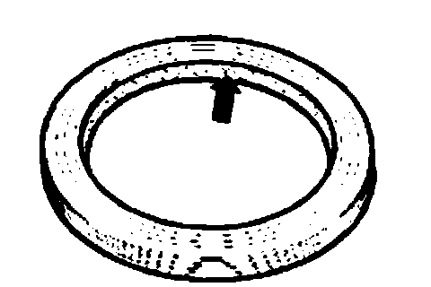
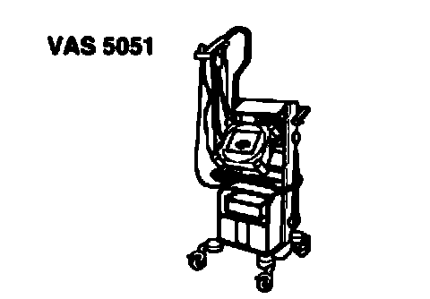

Final Drive - General
General repair instructions
The maximum possible care and cleanliness and proper tools are essential to ensure satisfactory and successful transmission repairs. The usual basic safety precautions also, naturally apply when performing vehicle repairs.
A number of generally valid instructions applicable for the various repair procedures - which were previously repeated a number of times at numerous places - are summarized here.
Transmission
^ When installing the transfer case, ensure that the dowel sleeves between the transmission and transfer case are correctly located.
^ When assembling mounting brackets as well as other waxed components the contacts surfaces must be cleaned. Contact surfaces must be free of grease and wax.
^ Locate correct bolts and other components via the Parts Catalog.
^ When changing a transfer case, fill with gear oil up to lower edge of filler hole.
^ When changing a front final drive, fill with gear oil up to lower edge of filler hole.
^ When changing a rear final drive fill with gear oil up to lower edge of filler hole.
Gaskets, sealing rings
^ Replace O-rings.
^ Radial shaft oil seals.
Before installing

^ Lightly oil outer edge and half-fill space between sealing lips (arrow) with grease G 052 128 Al.
After installation
^ Check gear oil level in transfer case.
^ Check gear oil level in front final drive.
^ Check oil level in rear final drive
Locking devices
^ Replace circlips.
^ Do not overstretch circlips.
^ Circlips must locate properly in the groove.
Bolts and nuts
^ Tighten and loosen bolts and nuts for securing covers and housings in a diagonal sequence.
^ Tightening torques as specified are for unoiled bolts and nuts.
^ Replace self-locking bolts and nuts.
^ Ensure with bolted connections that the areas of the contact surfaces as well as the visible surfaces of nuts and bolts are rewaxed after assembly, if necessary.
^ Use a thread tap to remove remains of locking fluid from all threaded holes in which self-locking bolts are to be screwed. Otherwise there is a risk that the bolts will shear the next time they are removed.
Bearings
^ Install needle bearings with lettered side (thicker metal) towards fitting tool.
Guided Fault Finding, Vehicle Self-diagnosis and testing

^ Before replacing transmission, transfer case or, for vehicles with differential lock on final drives, the malfunction cause should be determined as precisely as possible using vehicle diagnosis, testing and information system VAS 5051 in "Guided Fault Finding" mode.